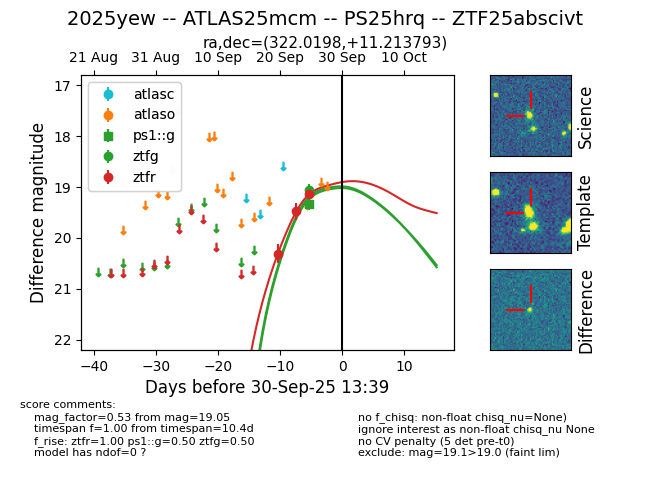
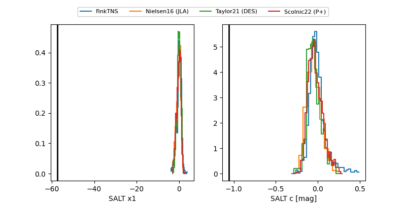

FINK: ZTF25abscivt
Lasair: ZTF25abscivt
ALeRCE: ZTF25abscivt
TNS: 2025yew
YSE: 2025yew
ZTF25abscivt (ztf,fink)
2025yew (tns,yse)
ATLAS25mcm (atlas)
PS25hrq (panstarrs)
equatorial (ra, dec) = (322.0198,+11.21379)
galactic (l, b) = (63.8503,-27.55599)


last ps1::g=19.34, ztfg=19.05, ztfr=19.14
1 ps1::g, 1 ztfg, 3 ztfr detections